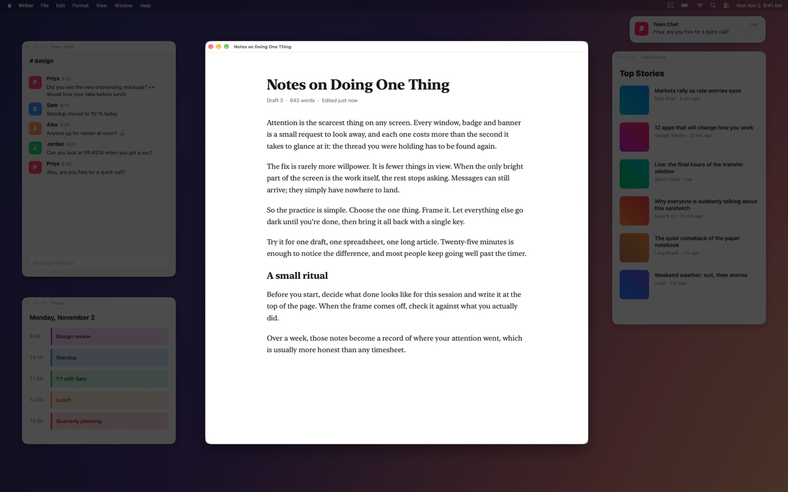

Focus Frame
Dim everything but your work.

Focus Frame is a small menu bar app for macOS that dims everything on your screen except the part you're working on. One hotkey sets the frame, and the same hotkey removes it.
Hotkeys
| ⌃ ⌥ F | Pick a frame: drag around an area, or click a window. Press again to remove the frame. |
| ⌃ ⌥ W | Frame the window you're in. Press again to remove it. |
| esc | Remove the frame, or cancel picking one. |
⌃ is Control and ⌥ is Option. The dim strength, the frame border, Esc and Open at Login are in the menu bar icon's menu.
Support
Questions, bugs or ideas? Email tommedema@gmail.com. Please include your macOS version and what you expected to happen.
The menu bar and Dock disappeared
That's the frame doing its job: everything outside it is dimmed, including the menu bar. Press esc or ⌃ ⌥ F to bring everything back. To keep a hint of what's around the frame, lower the Dim slider in the menu.
Esc doesn't reach my app while a frame is showing
While a frame is showing, Esc removes it. If you need Esc inside the framed app (in a text editor like Vim, for example), turn off Esc Clears Frame in the menu. ⌃⌥F still removes the frame.
The frame disappeared when I minimized the window
When a framed window is minimized, the dim steps aside and comes back with the window. Closing the window removes the frame.
How do I stop it from opening at login?
Click the menu bar icon and uncheck Launch at Login.
Does it need any permissions?
No. Focus Frame needs neither Accessibility nor Screen Recording access, makes no network connections and collects no data. See the privacy policy.